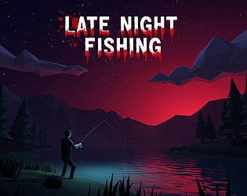

Video Game
Late night fishing
A game I made all by myself as a little side project: a horror fishing simulator with a fun daytime game mode where even people who dislike horror can enjoy the experience of fishing.

About the Project
Describe the concept of your game, its goals, and the experience you wanted to create.
My Contribution
Explain what you personally worked on during the project.
Project Details
Role
Game Designer, Engineer, sound designer
Engine
Unity
Team Size
1 person (me)
Duration
2 weeks
Development Process
Showcase your design process, iterations, challenges, and solutions.

Final Result
Explain the final result and what you learned from developing this project.